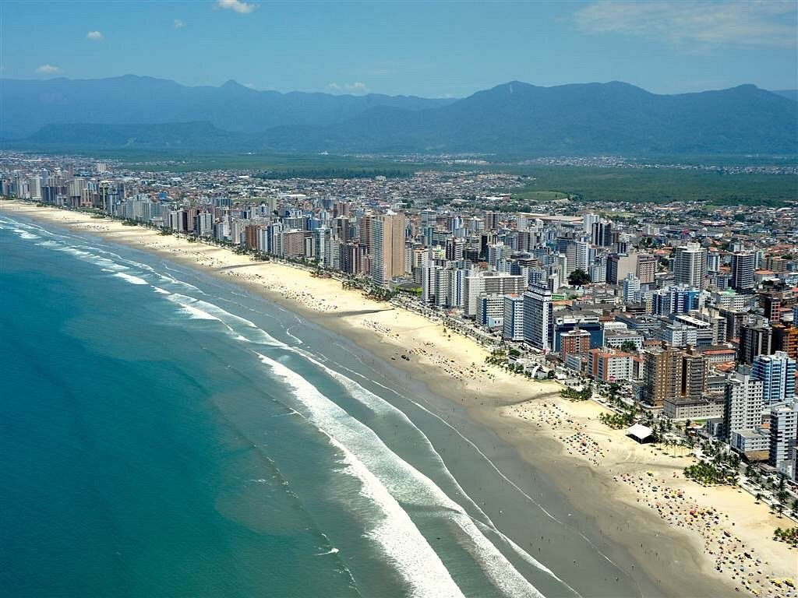

Perfeita para descansar!!
A Praia Grande é uma cidade na Baixada Santista, sua Praia é considerada uma das mais movimentadas do Brasil!
Apesar de seu nome sugerir apenas uma Praia de extrema proporções, na verdade é composta por 12 praias. Eu sei, tô tão decepcionado quanto você. Era habitada majoritariamente por pescadores lá no século XIX, mas em 1902 ela inciou de vez com a construção do Forte de Itaipu.

Em 1914 abriram a ponte pênsil que ligava o Morro dos Barbosas na ilha, ao morro Japuí no continentea ponte foi feita para conduzir um emissário de esgoto.